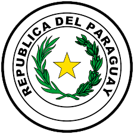

|
 |
 |
The National Flag of India (Hindi: Tiraṅgā) is a horizontal rectangular tricolour of India saffron, white and India green; with the Ashoka Chakra, a 24-spoke wheel, in navy blue at its centre.
The National Flag of Paraguay is a red–white–blue triband, was inspired by the colours of the French Tricolour, believed to signify independence and liberty.
The flag is unusual because it differs on its observe (front) and reverse (back) sides:
the observe of the flag shows the national coat of arms, and the reverse shows the seal of treasury.